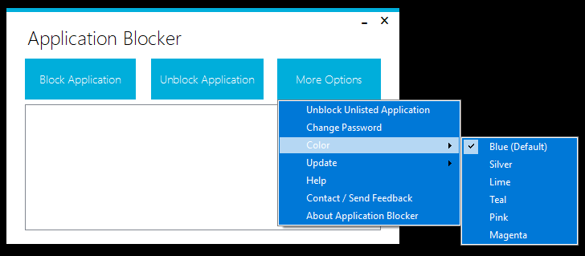
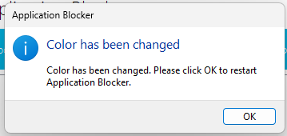
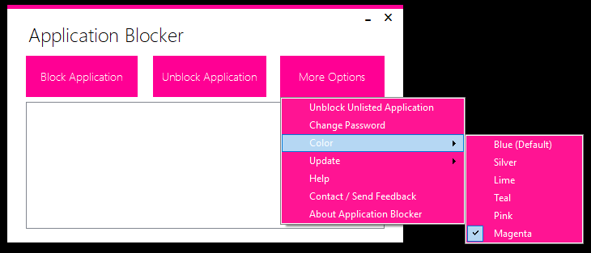
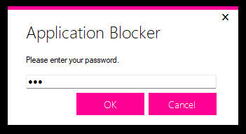

Colors

You can change Application Blocker theme color from "More Options" -> "Color". Currently only these colors are available: Blue (Default), Silver, Lime, Teal, Pink and Magenta.
Changing Color
When you select a color from the menu, the tool will ask you to click OK to restart. After restarting the tool, the color will be applied to the UI and password dialog.


